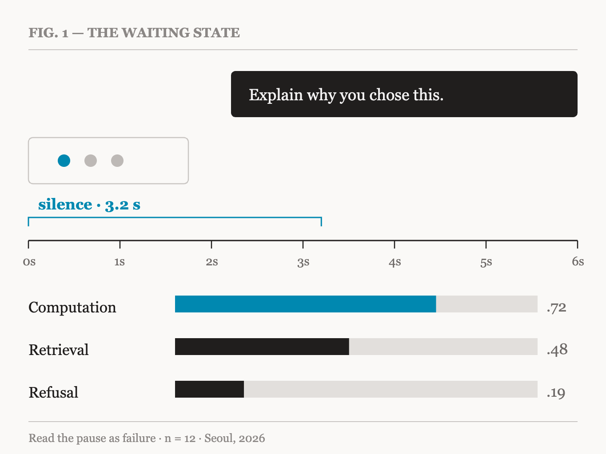

A spinner, three dots, or nothing at all. Few people design the waiting state, because it reads as delay rather than function. But watch closely and the user is not idle in those seconds: they move the cursor, reread the question they just wrote, and guess at what the system is doing. The guess becomes a theory, and the theory changes the shape of the next question.
The trouble is that silence is not one thing. The silence of computing, of searching, and of having decided not to answer are entirely different events for a user — and the interface says all three with the same animation.

“If the wait cannot be removed, the interface should at least name what is being waited for.”
In a field study with twelve participants, a screen that named the reason for the delay in one line made an identical wait feel shorter. The more interesting result was not perceived time but the next action: users who knew the reason waited instead of rewriting the question.